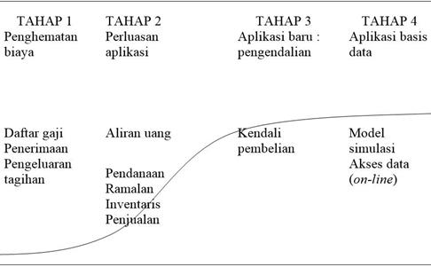
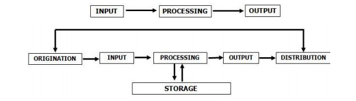

Dunia Usaha
Download ModuleManfaat Komputer Dalam Bisnis
Dalam dunia bisnis, komputer biasanya digunakan untuk proses administrasi keuangan, statistic kemajuan, data stok barang, prediksi untuk penjualan, bahkan hingga untuk merencanakan bisnis masa depan, dsb. Dalam hal tersebut diperlukannya data-data perusahaan yang valid dan diinput kedalam software komputer, dikelola dalam software, sehingga menghasilkan laporan yang diinginkan oleh owner/manager sebuah usaha untuk mengambil sebuah kebijakan untuk suatu usaha atau mengetahui perkembangan suatu usaha.
Evolusi Pengolahan Data
Berikut adalah Tahap dalam Evolusi Pengolahan Data sesuai dengan
Kurva S

TAHAP 1:
Tujuan utama tugas manusia digantikan oleh komputer adalah
penghematan biaya dari berbagai sektor.
TAHAP 2:
Perluasan aplikasi bertujuan mengalihkan SDM ke service, quality control,
operasional, analisa pengembangan system, dll (pekerjaan yang tidak bisa
digantikan dengan komputer).
TAHAP 3:
Pengendalian dalam pembelian dan penjualan.
TAHAP 4:
Menganalisa data-data yang sudah di input, untuk memprediksi penjualan
kedepannya.
Dasar-dasar Database
Apa yang dimaksud dengan database? Bagian berikut menjelaskan arti
data dan spreadsheet. Database diperkenalkan dengan menggunakan
spreadsheet sebagai titik awal.
a. Data
Data dapat mengambil banyak bentuk, termasuk angka, teks, gambar,
hyperlink, dan suara. Data dapat tentang subjek apa saja, atau sekitar lebih
dari satu subjek.
b. Spreadsheet
Seperti yang disebutkan, berasumsi bahwa terbiasa dengan spreadsheet,
beberapa contoh umum adalah Microsoft Excel, LibreOffice Calc, dan
Google Sheets. Spreadsheet digunakan sebagai titik awal untuk
menggambarkan basis data

gambar proses pengelolaan data
Sistem Manajemen Basisdata
Berikut ini merupakan beberapa tujuan dari pemanfaatan DBMS pada
jaringan komputer perusahaan berdasakan fungsinya sesuai dengan pengertian
DBMS:
a. Memelihara serta mengelola data dengan konsisten.
b. Untuk mengganti tempat penyimpanan fisik seperti pembukuan di media
buku besar menjadi ke dalam emdia elektronik.
c. Untuk memperoleh data yang sama serta memperoleh lebih banyak
informasi.
d. Agar basis data dapat digunakan secara bersamaan oleh beberapa
pengguna.
e. Cepatnya proses pengolahan data.
f. Tidak perlu menggunakan space yang besar untuk menyimpan data.
g. Keamanan data sangat terjaga.
h. Meminimalisir terjadinya perubahan data dan mengawasi adanya
pembaharuan data.
i. Menghindarai serta mencegah terjadinya inkonsisten dan duplikasi data.
j. Bertanggung jawab untuk mengolah data yang besar.
k. Mendukung bahasa quary.
l. Pengawasan backup database dan pemulihan dari kesalahan.
Software DBMS yang sering digunakan untuk mengelola database
perusahaan jenis-jenisnya antara lain:
a. MySQL
b. Oracle
c. Microsoft SQL Server
d. Firebird
Data Menguntungkan Bisnis
Manfaat yang bisa didapat dari penggunaan basis data dalam sebuah bisnis
a. Memberikan Pemahaman yang Solid tentang Pelanggan.
b. Mendapatkan Pemahaman yang Lebih dalam tentang Penjualan.
c. Kontrol Stok yang Efisien
d. Menanggapi Perubahan
e. Analisis data.
f. Meningkatkan Keamanan Data
Suatu Usaha Tidak Menggunakan Database
a. terlalu mahal
b. Terlalu Mengganggu
c. Akan Terlalu Banyak Waktu
d. Terlalu Sulit untuk Belajar dan Melaksanakan
e. Terlalu Rendah pada Daftar Prioritas